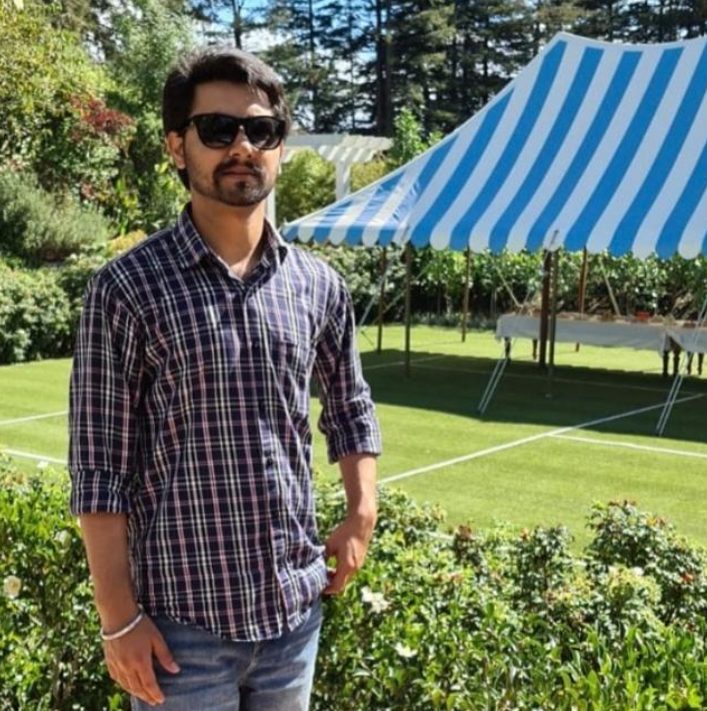
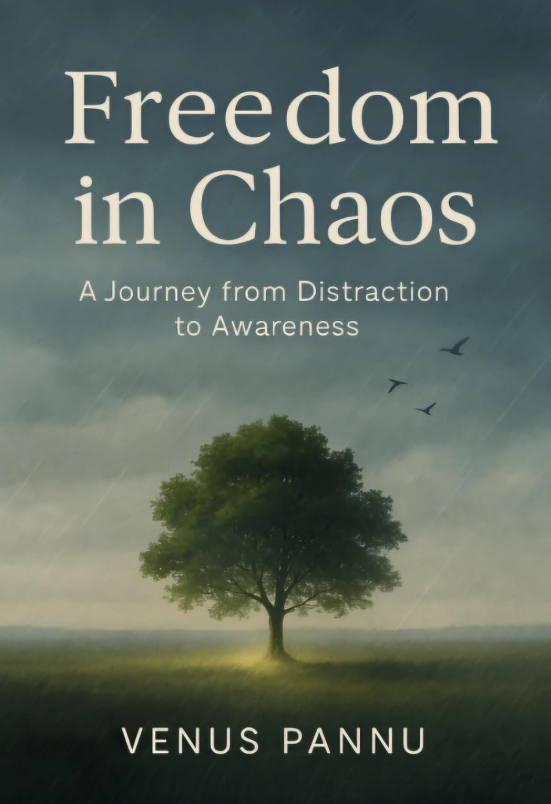

Ph.D. | Bridging science, storytelling, and human awareness
View Portfolio Read The BookFrom systems to soul. From data to human truth.
Ph.D. from University of Washington. Researcher. I studied complex systems — then realized the most complex system is the human mind.
Today I explore how science, narrative, and awareness intersect. My work asks: What if our greatest breakthroughs come from stillness, not speed?

A Journey from Distraction to Awareness

This is not just a book. It is a mirror, a pause, a compass for your inner wilderness. In a time where distraction is worshipped and noise is normal, you are holding a rebellion made of stillness.
Lived experience across New Zealand, Australia, US, India
I study how humans break, heal, and hope. My Ph.D. taught me systems. My book taught me stillness. My life across 4 countries taught me perspective.
Research themes, publications, and collaborations inside